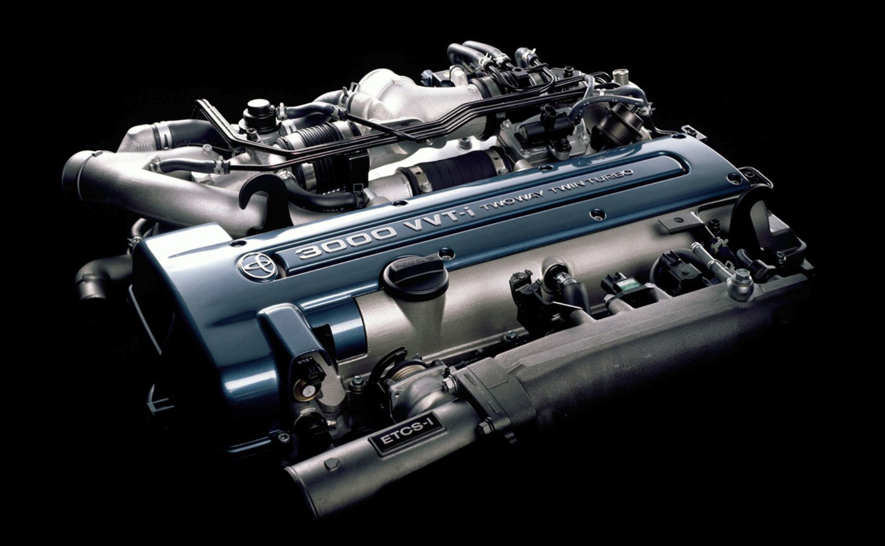

Производимые корпорацией двигателя Toyota 2JZ — это шестицилиндровые, рядные моторы, производство которых началось в 1991 году, сменив производимые до них двигатели серии М. Данные моторы устанавливались на автомобили с задним и передним приводом и располагались вдоль продольной оси машины. Выпускалось две модификации двигателя: 2.5 и 3 л.

Технические характеристики
Объём двигателя, куб.см 2997
Максимальная мощность, лс 280-324
Расход топлива, л/100км 11.9 - 14.1
Привод клапанов DOHC